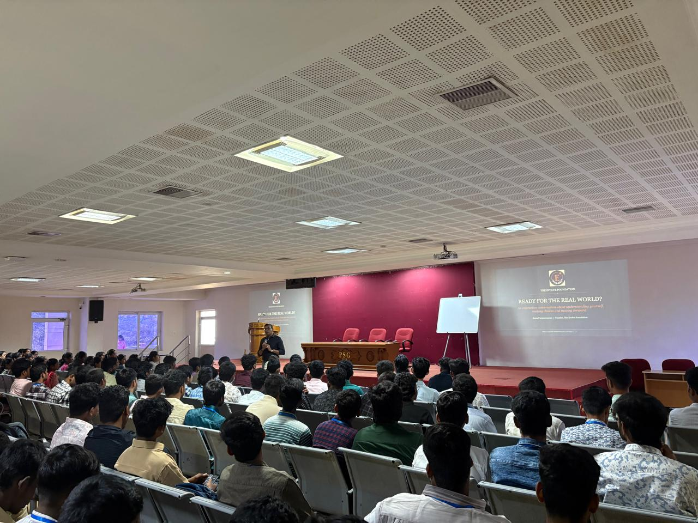

From generic to grounded
Students recognise strengths they have already demonstrated, using real experiences rather than generic labels.
A 90-minute interactive career-readiness experience that helps college students understand what they bring, explore where they may fit and identify a meaningful next step towards life beyond college.
Bring Launchpad to Your Campus →Colleges invest significantly in aptitude, technical skills, résumés, group discussions and interview preparation. But students can still enter that process unsure of what they are actually good at, where they may fit or what they should be doing now. Campus Launchpad works on that earlier layer of career readiness.
Students recognise strengths they have already demonstrated, using real experiences rather than generic labels.
Students connect what they are good at with kinds of work, problems and opportunities they may want to explore.
Students identify one meaningful action they can take now to become more career-ready.
The experience is designed around individual application. Every student works on their own experiences and leaves with a simple personal output they can continue using after the session.
One evidence-backed strength grounded in something they have actually done.
Possible directions where their strengths may be useful and worth investigating further.
One concrete career-readiness action rather than another vague intention.

As part of our early engagement with college students, founder Rams Parameswaran recently spoke with approximately 150 students across first-year and third-year groups at PSG College of Technology.
The sessions introduced The Evolve Foundation and opened a conversation around navigating college, career choices and the transition to life beyond college — including how Launchpad is designed to support students as they think about what comes next.
Campus Launchpad combines facilitator-led learning, individual application and student interaction. It is designed primarily for undergraduate students preparing for internships, career choices and placements.
Campus Launchpad is designed to complement — not replace — aptitude, technical, résumé or interview preparation. The institution receives a facilitated student experience, structured student output, post-session feedback and a brief outcome snapshot.

After 30+ years serving in leadership capacities for global financial institutions and Wall Street firms, Rams founded The Evolve Foundation to help young people understand themselves earlier and navigate important decisions more thoughtfully. He personally designs and facilitates Launchpad experiences.
About Rams →Tell us a little about your institution, student cohort and placement-readiness goals. We would be happy to explore whether Campus Launchpad is the right fit.
Talk to Us →